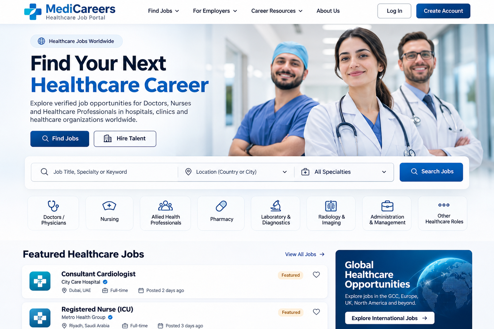

Care for others.
Find your place.
Explore healthcare careers across specialties, countries and new possibilities.
For doctors, nurses and healthcare professionals.

Explore by specialty
Find the work that fits you.Your next opportunity
Selected international medical projects, US, Australian and New Zealand employers, and remote roles. Availability varies by source. Remote does not mean worldwide eligibility.
No matching opportunities
No imported vacancies match these filters. Try another country, or read its licensing guide below.
Read licensing guidesA world of possibilities.
Choose a destination. Discover your next opportunity.
Your route to practice.
Exams, registration and official next steps across 12 countries.
A starting point for internationally trained professionals. Requirements depend on your qualifications, specialty and route. Registration, a job offer and permission to work are separate requirements. Confirm current eligibility with the regulator before booking an exam.
Where the jobs come from.
Original vacancies, named sources and direct links. No claim of employer verification or worldwide completeness.
Feeds refresh on demand after one hour. This page also checks hourly while open. Background imports are not scheduled.
Want broader country coverage?
NHS Jobs, Adzuna, Jooble and other job boards require a suitable feed agreement or credentials before they can be connected. They are not connected here. No paid API has been enabled. Connected employer feeds include Iqarus, Epworth and Abano Healthcare through their public SmartRecruiters postings. Each employer feed imports up to 500 current postings; these are selected sources, not worldwide completeness.
NHS Jobs integration information